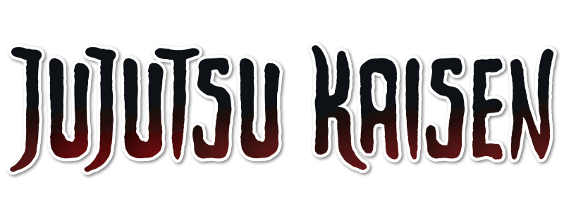
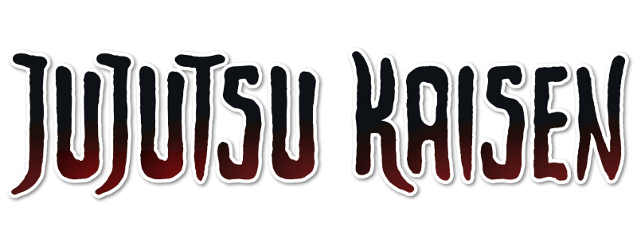

The main events of the arc consist of the sealing of Gojo Satoru, Toji Fushiguro's reanimation, and
subsequent confrontation with Megumi, the Shibuya Massacre by Sukuna, Kento Nanami's death, Nobara
Kugisaki's fall, and Kenjaku ingesting Mahito via Cursed Spirit Manipulation.
Geto vs Toji
Toji begins revealing how he snuck his way into the school. The barriers hiding the Tombs of the Star are for hiding and can't be guarded. So long as the location is already known, infiltrating isn't that difficult. Jujutsu sorcerers are busy this time of year and the school is infested with Fly Heads at the moment. In this situation, Toji believes himself to be an invisible man. However, by holding a cursed tool he's no longer invisible.
 
